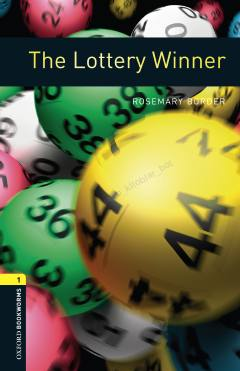

TLLotereyada yutilgan katta pul va uni talashayotgan ikki inson o'rtasidagi qiziqarli detektiv hikoya.
Jason Uilyams lotereyada besh million funt yutib oladi, ammo bu katta boylik uning hayotini murakkablashtiradi. Emma Karter chipta aslida uniki ekanligini da'vo qilib, sudga murojaat qiladi va haqiqatni aniqlash uchun kurash boshlanadi. Ushbu hikoya o'quvchilarni yolg'on va haqiqat o'rtasidagi qiziqarli voqealar bilan tanishtiradi.